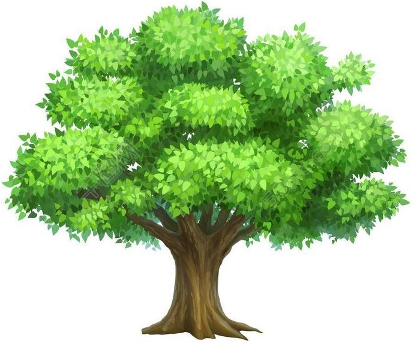

<!DOCTYPE html>
<html>
<head>
    <meta charset="UTF-8">
    <script type="text/javascript" src="js/jquery-3.2.1.min.js"></script>

    <title>demo</title>
    <style type="text/css">
        /*圖片*/
        .photo {
            position: absolute;
            margin-top: 100px;
            margin-left: 100px;
            overflow: hidden;
            width: 100px;
            height: 100px;

        }

        /*地圖範圍*/
        .map {
            position: relative;
            padding-top: 100px;
            padding-left: 100px;
            overflow: hidden;

        }

        /*通行*/
        .pass {
            height: 100px;
            width: 100px;
            float: left;
            background-image: url("/photo/pass.jpg"); /*抓取圖片url*/
            background-size: 100px 100px; /*定義圖片長寬*/
        }

        /*障礙*/
        .obstacle {
            height: 100px;
            width: 100px;
            float: left;

            background-image: url("/photo/obstacle.jpg"); /*抓取圖片url*/
            background-size: 100px 100px; /*定義圖片長寬*/

        }

    </style>

</head>
<body>

<script type="text/javascript">

    var map = [
        [0, 0, 0, 0, 0],
        [0, 1, 0, 2, 0],
        [0, 1, 0, 1, 0],
        [0, 1, 0, 1, 0],
        [0, 0, 0, 1, 0],
        [0, 2, 0, 0, 0]];
    // map陣列值為 0 圖片通行
    // map陣列值為 1 障礙物
    // map陣列值為 2 角色
    var stop = false;// 控制是否能行走，預設可以行走
    var verticalLength = map.length;// 欄
    var horizontalLength = map[map.length - 1].length;// 列

    var vertical = 5;// 圖片初始位置 陣列 欄
    var horizontal = 0;// 圖片初始位置 陣列 列
    var obstacle = false; // 判斷是否有障礙物
    $(function () {
        $("#start").css("top", vertical * 100);// 圖片初始位置 陣列 欄
        $("#start").css("left", horizontal * 100);// 圖片初始位置 陣列 列
        $("#top").css("top", vertical * 100);// 圖片初始位置 陣列 欄
        $("#top").css("left", horizontal * 100);// 圖片初始位置 陣列 列
        //
        $("#map").css("height", verticalLength * 100);// 透過陣列 橫 得知地圖最大高度範圍
        $("#map").css("width", horizontalLength * 100);//透過陣列 列 得知地圖最大長度範圍
        //
        for (var i = 0; i < verticalLength; i++) {
            for (var j = 0; j < horizontalLength; j++) {
                if (map[i][j] > 0) {
                    $("#map").append("<div class='obstacle'></div>");
                    // 障礙物
                } else {
                    $("#map").append("<div class='pass'></div>");
                    // 可通行
                }
            }
        }


    });

    $(document).keydown(function (event) {
        $("#start").css("display", "none");
        $("#top").css("display", "inline");

        switch (event.which) {
            case 37:// 鍵盤 左按鍵
                move("左", horizontal, vertical);

                break;
            case 38:// 鍵盤 上按鍵
                move("上", horizontal, vertical);

                break;
            case 39:// 鍵盤 右按鍵
                move("右", horizontal, vertical);

                break;
            case 40:// 鍵盤 下按鍵
                move("下", horizontal, vertical);

                break;
            default:
                break;
        }

    });

    // 選轉圖片
    function rotate(rotate, stop) {
        if (stop == false) { //遇到牆壁可以顯示正確方向位置
            $("#top").css("transform", "rotate(" + rotate + "deg)");
            $("#top").css("-ms-transform", "rotate(" + rotate + "deg)");
            $("#top").css("-moz-transform", "rotate(" + rotate + "deg)");
            $("#top").css("-webkit-transform", "rotate(" + rotate + "deg)");
            $("#top").css("-o-transform", "rotate(" + rotate + "deg)");
        }

    }

    // 圖片移動
    function move(direction, horizontal, vertical) {
        switch (direction) {
            case "左":
                // 圖片選轉 270 度，遇到牆壁可以顯示正確方向位置
                rotate(270, stop);
                if (horizontal > 0) {

                    this.horizontal = horizontal - 1; // 陣列向左移動
                    obstacle = pass(map[this.vertical][this.horizontal], "left", this.horizontal, this.vertical);
                    if (obstacle) {
                        this.horizontal += 1;// 不能通行，將陣列向右移動。設為原來位置
                    }
                }
                break;
            case "上":
                //  圖片選轉 0 度 ，遇到牆壁可以顯示正確方向位置
                rotate(0, stop);

                if (vertical > 0) {

                    this.vertical = vertical - 1;// 陣列向上移動
                    obstacle = pass(map[this.vertical][this.horizontal], "top", this.horizontal, this.vertical);
                    if (obstacle) {
                        this.vertical += 1;// 不能通行，將陣列向上移動。設為原來位置
                    }
                    //
                }
                break;
            case "右":
                // 圖片選轉 90 度，遇到牆壁可以顯示正確方向位置
                rotate(90, stop);

                if (horizontal < horizontalLength - 1) {

                    this.horizontal = horizontal + 1;// 陣列向右移動
                    obstacle = pass(map[this.vertical][this.horizontal], "left", this.horizontal, this.vertical);
                    if (obstacle) {
                        this.horizontal -= 1;// 不能通行，將陣列向右移動。設為原來位置
                    }
                    //
                }
                break;
            case "下":
                // 圖片選轉 180 度，遇到牆壁可以顯示正確方向位置
                rotate(180, stop);


                if (vertical < verticalLength - 1) {

                    this.vertical = vertical + 1;// 陣列向下移動
                    obstacle = pass(map[this.vertical][this.horizontal], "top", this.horizontal, this.vertical);
                    if (obstacle) {
                        this.vertical -= 1;// 不能通行，將陣列向下移動。設為原來位置
                    }
                }
                break;

        }
    }

    // 通行
    function pass(map, direction, horizontal, vertical) {

        if (map == 0 && stop == false) { // 可以通行
            switch (direction) {
                case "left":// 左
                    $("#top").css("left", horizontal * 100 + "px");
                    break;
                case "top":// 上
                    $("#top").css("top", vertical * 100 + "px");
                    break;
            }
        } else if (map == 2) {
            stop = true;// 進入對話框座標，停止圖片移動
            $("#dialog").empty();// 清除對話框
            dialog(vertical, horizontal);// 顯示對話框座標
            $("#dialog").css("display", "inline");//顯示對話框
            return true;// 回到上一步 座標位置
        } else {
            return true;// 回到上一步 座標位置
        }

    }//pass
    // 對話框
    function dialog(vertical, horizontal) {
        if (vertical == 5 && horizontal == 1) {// 對話框座標
            // 添加對話框內容
            $("#dialog").append(
                "<div style='width: 1000px;height: 200px;background-color: #7b76a8'>" +
                "yan" +
                "    \n" +
                "    <button id='t_close_01' type='button'>關閉</button></div>");
        }
        if (vertical == 1 && horizontal == 3) {// 對話框座標
            // 添加對話框內容
            $("#dialog").append(
                "<div style='width: 1000px;height: 200px;background-color: #7b76a8'>" +
                "ting" +
                "    \n" +
                "    <button id='t_close_01' type='button'>關閉</button></div>");
        }
    }


</script>

<!--地圖-->

<div id="map" class="map">
    
    
</div>
<br>
<br>

<div id="dialog" style="display: none">

</div>


<!--<div id="t1" style="display: inline ;display: none;">-->
<!--<span style="background-color: yellow ">yan</span>-->
<!---->
<!--<button id="t_close_01" type="button">關閉</button>-->
<!--</div>-->


<script>
    $(function () {
        $(document).on('click', '#t_close_01', function () {
            stop = false;
            $("#dialog").css("display", "none");
            console.log("close");
        });
    });
</script>
</body>
</html>
